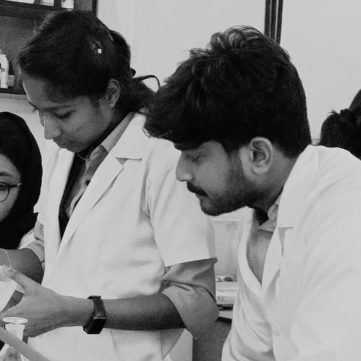

Available for New Opportunities
Hafin Parokkot
Food Technologist
Food Science postgraduate driving innovation in the nuts & FMCG sector —
from lab bench to commercial scale.
0+
Years Experience
0+
Industry Experiences
0+
Certifications